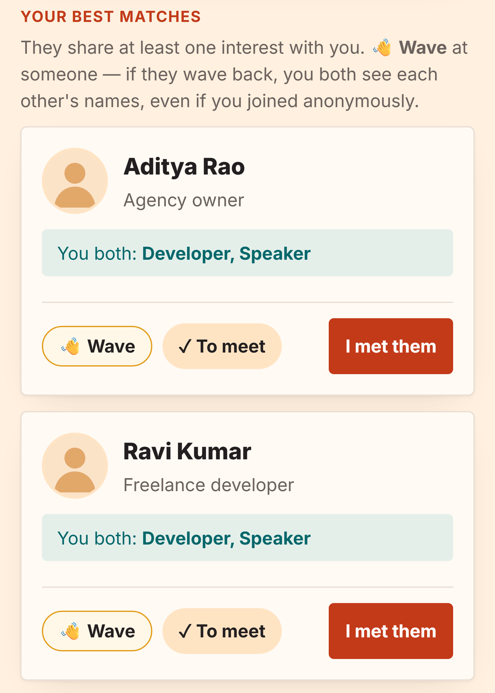
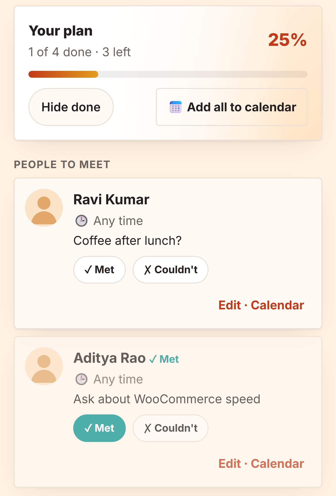
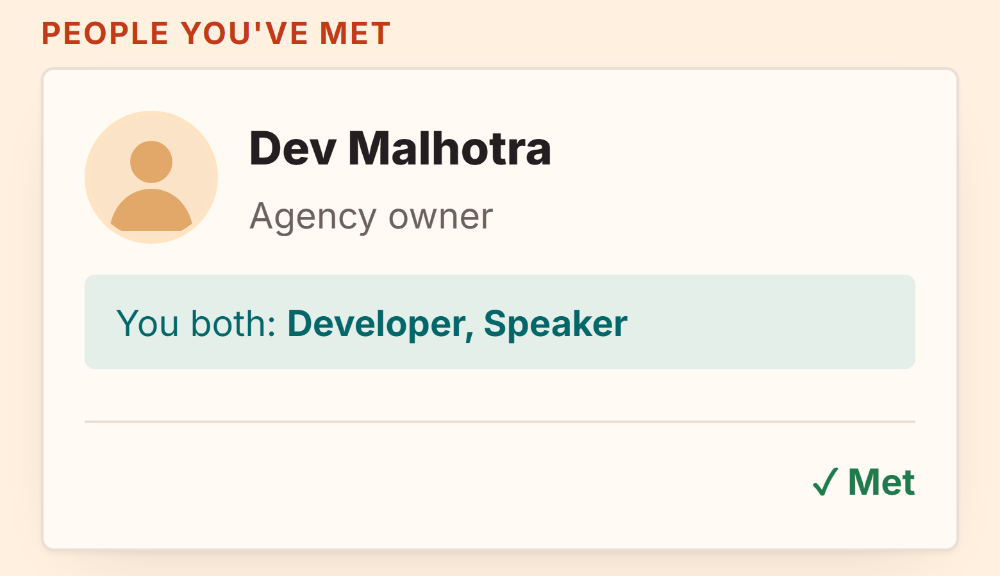
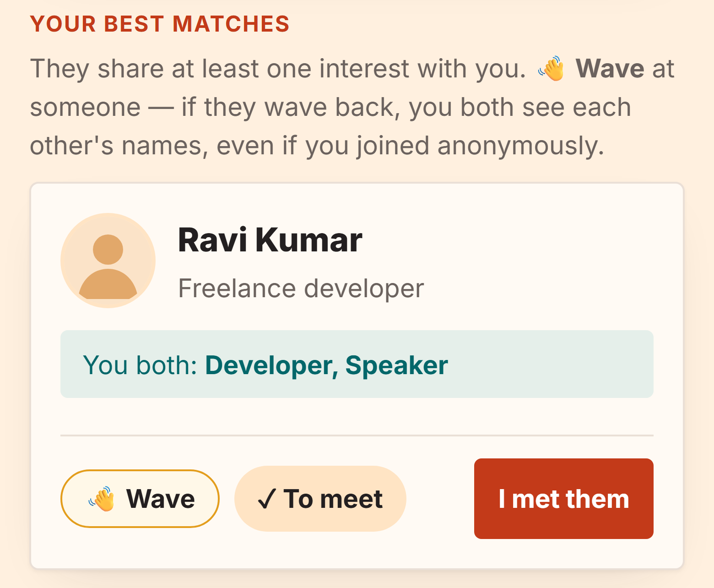
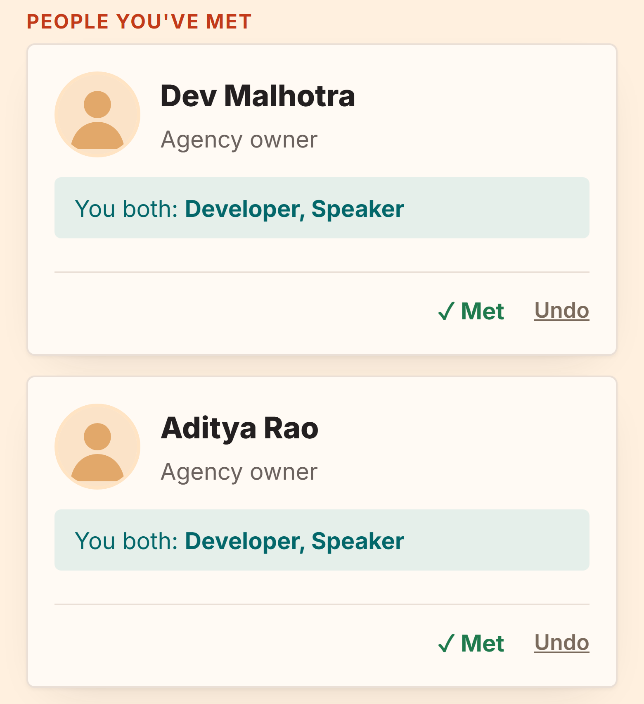
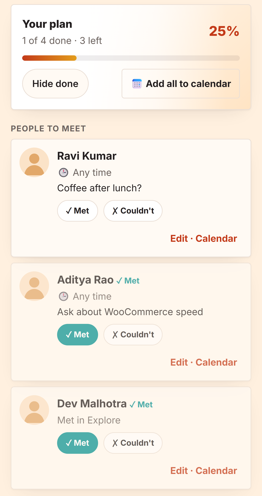
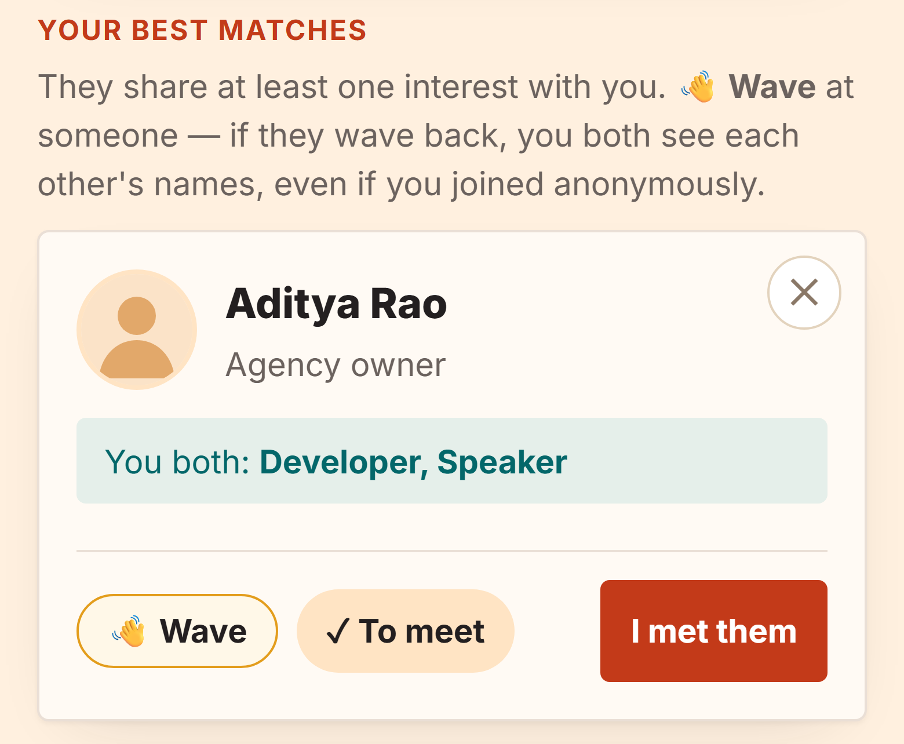
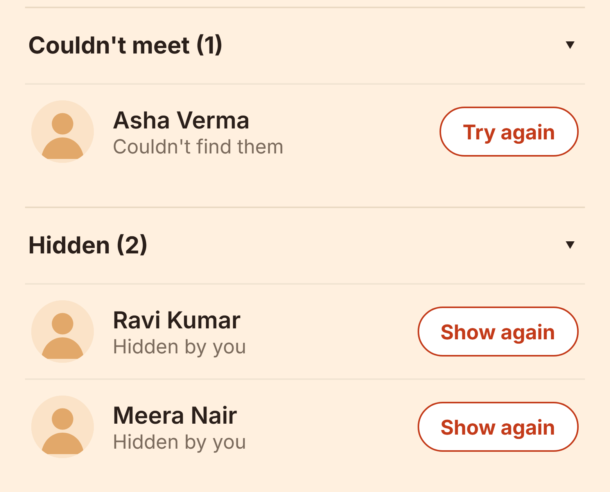
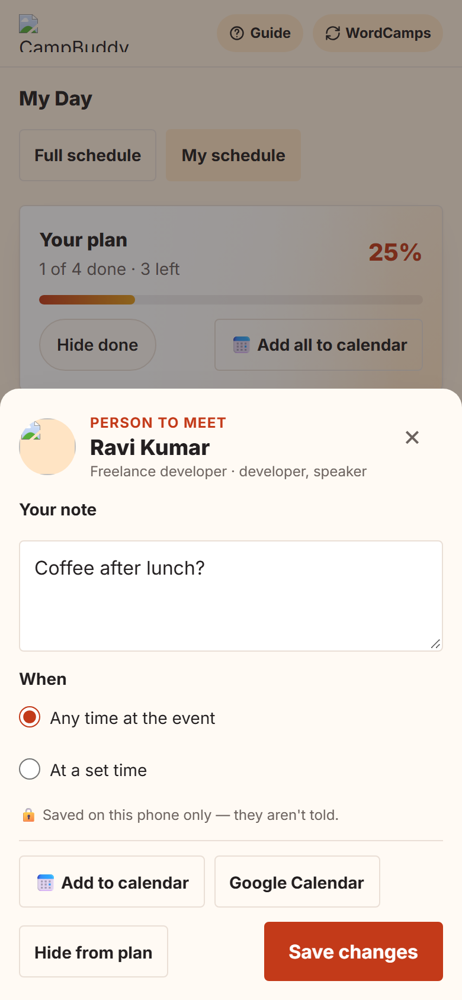
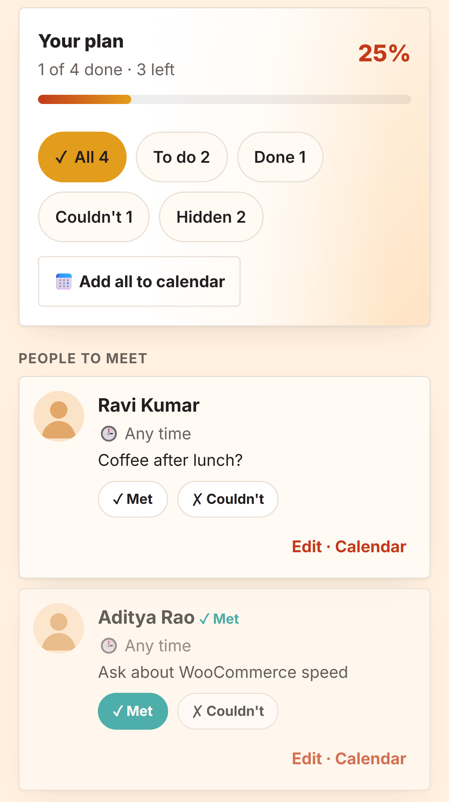

Upar wali panti abhi ka asli app hai (isolated test copy, fake naam). Neeche ki panti mock-up hai: asli app me abhi ye nahi hai. Mock-up bhi asli page par hi banaye gaye hain (wahi rang, wahi font), bas naye tukde upar se jode gaye hain.
Abhi Sync ki kami (asli screenshots)
Ek insaan ko My Day me “Met” kiya aur ek ko Explore me “I met them”. Dono jagah alag haal dikhta hai.

ExploreAditya Rao par ab bhi “✓ To meet” aur “I met them”, jabki My Day me wo Met hai.

My DayAditya ✓ Met hai. Dev Malhotra (jise Explore me “I met them” kiya) yahan hai hi nahi.

Explore → People you've metDev Malhotra ✓ Met yahan hai, My Day ko iski khabar nahi.
Baad me 1. Discovery ↔ My Day sync
Ek jagah dabao, doosri jagah wahi. Ek hi record, dono screens usi se padhti hain. Kuch delete nahi hota.

Explore, Best matchesAditya (My Day me Met) ab yahan se hat gaya.

Explore, People you've metDev aur Aditya, dono ✓ Met (galti ho to “Undo”).

My DayDev Malhotra bhi “Met” me, Explore se aaya. Progress “1 of 4” waisa hi: bina plan wale ko nahi ginte (ye aapka faisla baaki hai).
Baad me 2. ✕ Hide (kuch delete nahi)
Card ke corner me halka ✕. Insaan “Hidden” me chala jata hai, note aur time bache rehte hain, “Show again” se wapas.

Card par ✕Chhota, halka, corner me. Jinse chat chal rahi hai unke liye ek confirm.

List ke neecheBand sections: “Couldn't meet (N)” aur “Hidden (N)”, “Try again” / “Show again” ke saath.

Edit sheet“Remove” ki jagah “Hide from plan”: note aur time delete nahi hote.
Baad me 3. My schedule ke status filter
“Hide done” ki jagah chips, sessions aur logon dono par. Chip par jo number, wahi cards (dono hamesha barabar). Jis chip me kuch nahi, wo chhupa rahega (aapka faisla baaki).

All / To do / Done / Couldn't / HiddenYahan paanchon dikh rahe hain: khali chips chhupane par sirf jinme kuch ho.
Jo nahi badlega: Wave, server, database, Blade, API. Kuch bhi delete nahi hota (sirf “Clear my data”). Sab kuch sirf aapke phone me. Naya analytics me sirf gine hue events, koi naam nahi.